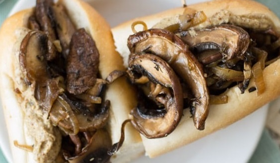

Vegan French Dip

Ingredients
- 2 tbsp. olive oil
- 1 medium onion
- 2 garlic cloves
- 3 portobello mushroom caps
- 1 cup vegetable broth
- 1 tbsp. soy sauce
- 1 tbsp. vegan Worcestershire sauce
- 1/2 tsp. dried thyme
- 1/4 tsp. liquid smoke
- 1/4 tsp. black pepper
- 2-6 inch sandwich rolls or baguette sections
Directions
- Caramelize onions by cooking at low-medium heat in 1 tbsp of oil for 20 minutes. Add garlic and cook for 2 more minutes. Remove from pan.
- Slice mushrooms into thin strips. Increase pan temperature to medium and add remaining oil. Cook until lightly browned. Around 5 minutes.
- Return onion garlic mix to pan and add remaining ingredients. Bring to a simmer for 5 minutes.
- Remove solid contents from pan, put them in your bread, and dip in sauce. Ta-da.
Original Recipe
Contact Me
Get at my email
The University of Montana
32 Campus Dr
Missoula, MT 59812